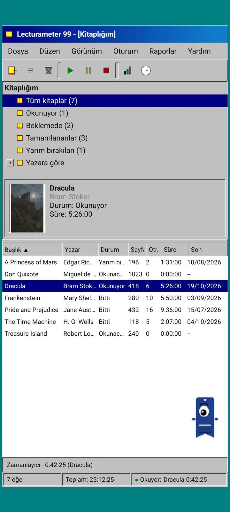
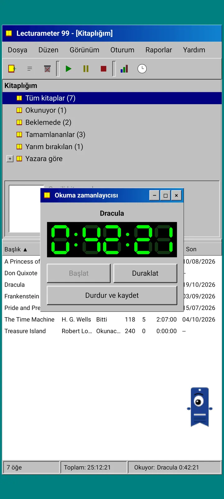
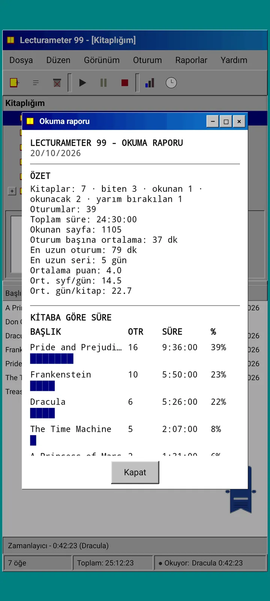
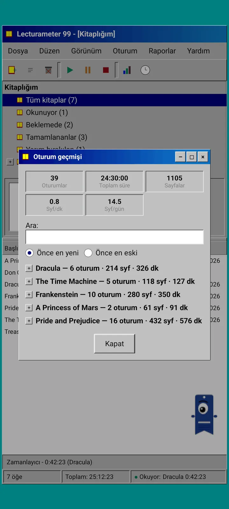
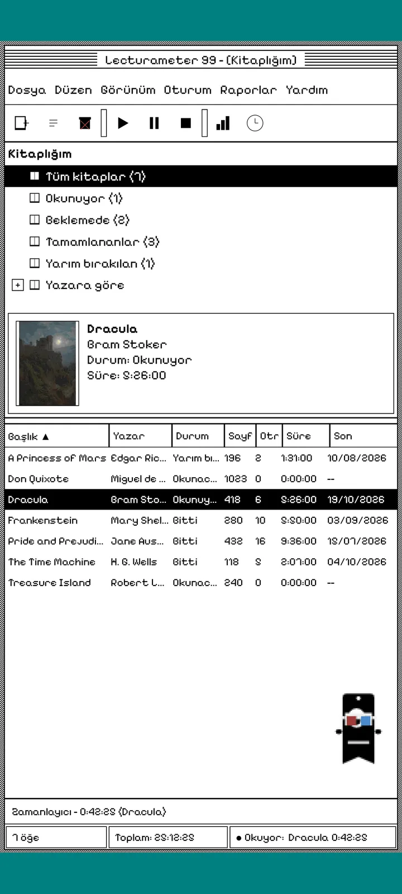
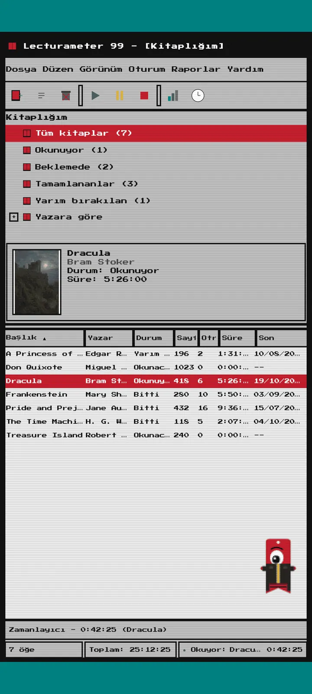
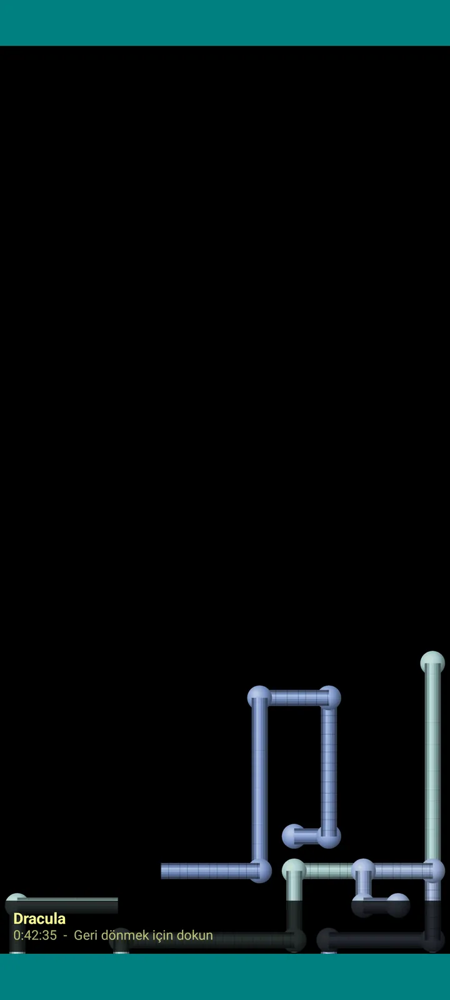

Lecturameter 1999
Lecturameter'ı 1999'da bir CD-ROM'dan kurmuşsun gibi. Pencereleri, menüleri ve tabloları olan, gerçek yedeklerini açan alternatif bir uygulama istemcisi.

Nedir
Telefonunda çalışan doksanların sonundan bir masaüstü programı. Deniz mavisi bir masaüstü üzerinde tek bir pencere, bir menü çubuğu, bir araç çubuğu, bir klasör ağacı, yoğun bir tablo ve bir durum çubuğu.
- Kitaplık ağacı: tüm kitaplar, okunanlar, bekleyenler, bitirilenler, bırakılanlar ve yazara göre
- Başlık, yazar, durum, sayfa, oturum, süre ve son okumayı gösteren tablo. Sıralamak için bir sütun başlığına dokun
- Lecturameter'ın kullandığı aynı katalogla gerçek kitap araması
- Lecturameter yedeğini ve Goodreads CSV'sini içe ve dışa aktarır. Verilerin hiçbir şey kaybetmeden girer ve çıkar

Neden var
Bir deney: gerçek uygulamaya dokunmadan, Lecturameter fikrini kökten farklı tasarım öncüllerinden yola çıkarak sıfırdan yeniden kurmak. Tüm yorumlar arasında en çok 1999 olanını sevdim; onu eğlenceli bir alıştırma olarak bitirip eksiksiz bir istemciye dönüştürdüm. Bilerek Lecturameter'dan daha basit: bir deney ve prensipte daha fazla geliştirilmeyecek.
- Yeşil LCD göstergeli yüzen bir pencerede zamanlayıcı. Taşınır, görev çubuğuna küçülür ve durum çubuğunda saymaya devam eder
- Durdurduğunda, oturumu kaydet penceresi sayfalarını sorar ve tıpkı Lecturameter gibi temponu hesaplar
- Kaydedilen oturumlar Lecturameter oturumlarıdır: Lecturameter 1999 yedeğini dışa aktarıp Lecturameter'a içe aktarırsan modern uygulamaya geri döner.

Okuma raporu
İstatistikler basılı bir rapor: özet, blok çubuklarla kitap başına süre, günlük sayfa olarak hız, karakterlerle çizilmiş yıllık takvim ve son yedi gün.

Oturum geçmişi
Oturumlar artı ve eksili bir ağaçta kitaba göre gruplanır; en üstte beş rakam var: oturumlar, toplam süre, sayfalar, dakika başına sayfa ve günlük sayfa.

Oturumu kaydet
Tarih, dakika, ilk ve son sayfa, yorum. Özet, sen yazdıkça sayfaları ve tempoyu hesaplar. Son sayfaya ulaşırsan kitabı bitirip bitirmediğini sorar.

Pagi 99
Pagi de 1999'a yolculuk ediyor: pikselli ve o dönemin ofis asistanları gibi ekranda serbestçe dolaşıyor. Sürükleyebilirsin, dokununca bir cümle söyler ve ipuçlarını sarı balonlarda gösterir.
Temalar
Classic 98 ücretsizdir ve varsayılandır. Paket altı tane daha ekler; her birinin kendi arka planı ve kendi sesleri var.

Görünüm menüsünden seç
Görünüm, Tema... yedi temanın olduğu bir pencere açar. Değişiklik tüm pencerelere, zamanlayıcıya ve Pagi'ye aynı anda uygulanır.
- Classic 98, ücretsiz ve varsayılan: gri pencereler, lacivert başlık çubukları ve deniz mavisi bir masaüstü
- Tema paketi: 1984, Gumdrop, Memory, Towers, Core ve 8-bit
- Her tema kendi masaüstü arka planını ve dokunuşlar, pencereler ve zamanlayıcı için kendi seslerini getirir
- Sessizce okuyorsan Görünüm, Tema sesleri sesleri kapatır

Classic 98
Gri pencereler, lacivert başlık çubukları ve deniz mavisi bir masaüstü. Ücretsiz, uygulamanın açıldığı tema bu.

1984
Nokta desenleri ve kare pencerelerle tek bit siyah beyaz bir masaüstü.

Gumdrop
Yarı saydam renkli plastik, yuvarlak düğmeler ve arka planda çizgiler.

Memory
Doksanlardan bir disk konsolunun menüleri, koyu mavi tonlarında.

Towers
Doksanlardan bir başka disk konsolu: gece mavisi ve açık mavi çizgiler.

Core
Siyah ve yeşil bir konsol, hiç kapanmayan bir ekran gibi.

8-bit
Kalın pikseller, az renk ve bloklu harfler.

Ödemeden önce dene
Kilitli bir temaya dokun, uygulamanın tamamı o temaya geçer. Satın almadan kapatırsan önceki tema geri gelir.
Ekran koruyucular
Yalnızca zamanlayıcı çalışırken ve telefona dokunmadığında görünürler. 1, 3 veya 5 dakika beklerler, ya da hiç çıkmazlar. Tek bir dokunuş seni geri getirir ve zamanlayıcı saymaya devam eder.

Uçan kitaplar
Siyah bir ekranda kapaklarını çırpan piksel kitaplar.

Harf alanı
Pek çok alfabeden harfler, yıldız alanı gibi süzülüp geçiyor.

Sayfa boruları
Ekran dolana kadar kendi kendine çizilen sayfalardan borular.

Zıplayan Pagi
Ekranın kenarlarından sekip duran Pagi.

Okuma saati
Oturum süresi büyük LCD rakamlarla.

Pagi için kostümler
Pagi 99 için sekiz kostüm. Bunları Görünüm, Pagi'nin kostümü... bölümünden seçersin ve ödemeden önce deneyebilirsin.
- Kasetçalar
- Ters çevrilmiş şapka
- 3D gözlük
- Neon güneş gözlüğü
- Elinde disket
- Deri ceket
- Cep evcil hayvanı
- Karton taç
Mağaza
Uygulama ücretsizdir ve okumanı kaydetmek için eksiksizdir. Satın alabileceklerin yalnızca görünümü değiştirir.
Uygulamanın tamamı, süre sınırı olmadan.
- Kitaplık, arama, zamanlayıcı ve oturumlar
- Okuma raporu ve oturum geçmişi
- Lecturameter yedeği ve Goodreads CSV, içe ve dışa aktarma
- Classic 98 teması ve Pagi 99
- Hesap yok, reklam yok
Tek seferlik ödemeler, abonelik yok.
- Tema paketi, €3.49: arka plan ve seslerle 6 tema, ayrıca ekran koruyucular
- Ekran koruyucular, €1.99: 5 ekran koruyucu
- Pagi kostümleri, €1.99: 8 kostüm
- 1999'un tamamı, €4.49: temalar, ekran koruyucular ve kostümler
Bana bir kahve ısmarlamak istersen Yardım menüsünde isteğe bağlı bahşişler.
Temalar ve kostümler ödemeden önce canlı denenebilir. Satın almadan kapatırsan elindekiler geri gelir.
Lecturameter'a göre ne değişiyor
Lecturameter ile aynı
- Aynı veriler: kitaplar, oturumlar, durumlar, puanlar ve notlar. Yedek dosyası iki uygulamada da aynı.
- Başlığa veya yazara göre kitap arama.
- Gerçek zamanlayıcı: arka planda ve uygulamayı kapatsan bile saymaya devam eder.
- Hesap yok, reklam yok, kitap aramak dışında bağlantı yok.
- Lecturameter ile aynı diller.
Yalnızca 1999 sürümünde
- 1999 masaüstü arayüzü. Material yok.
- Gerçek pencereler: sürükler, küçültür ve çarpıyla kapatırsın.
- Karakterlerle çizilmiş takvimli, metin biçiminde okuma raporu.
- Uzun basınca bağlam menüsü ve klavye bağlarsan klavye kısayolları.
- İpucu balonlu pikselli Pagi 99.
- Kendi arka planı ve sesleri olan isteğe bağlı temalar, zamanlayıcı çalışırken ekran koruyucular ve Pagi için kostümler.
Bilerek dışarıda bıraktıkları
- Pro yok, abonelik yok. Okumanı kaydetmenin hepsi ücretsiz, mağaza yalnızca görünüm satar.
- Meydan okuma, bingo, yıllık Wrapped veya widget yok.
- Sürükleyici oturum, ortam sesleri veya Google Drive yedeklemesi yok. Yedek bir dosya olarak kaydedilir.
Kapalı test
Lecturameter 1999, Google Play'de kapalı testte. iOS daha sonra gelecek, henüz tarih yok.
- Gruba katıl groups.google.com/g/lecturameter-1999
- Test kullanıcısı olarak kaydol: play.google.com/apps/testing/com.lecturameter.r1999
- Şuradan yükle: Google Play
Google Play'de kapalı testte, iOS daha sonra. Blog yazısını oku nereden çıktığını ve neler beklemen gerektiğini görmek için.